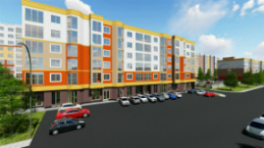
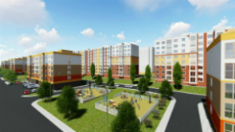
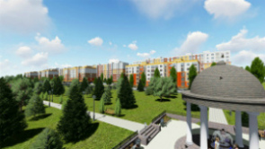

Житловий комплекс "На Щасливому"-це новий масив, який досить впевнено зайняв міцні позиції на ринку нерухомості Рівненщини. Великий вибір квартир надає більше можливостей для прозорої і професійної роботи з клієнтом. Колектив чітко дотримується визначеної політики, головна концепція якої полягає в якості надання послуг, професійному та індивідуальному підході до кожного клієнта. Тут завжди раді спілкуванню та співпраці з Вами, з метою знайти спільну мову та досягти взаємовигідних умов.
Він розташований в двох кілометрах від центру, по вулиці Чорновола. Новобудова знаходиться за півкілометра від озера Басів Кут. У районі прекрасна екологія, повністю відсутні промислові підприємства. У декількох хвилинах ходьби зупинка громадського транспорту, дорога в центр міста займає не більше десяти хвилин. Неподалік від будинків є медичний центр, дитячий садочок і школа, працюють відділення банків, пошта, магазини і супермаркети.
«На Щасливому» – житловий комплекс економ-класу, що вдало поєднує в собі невелику вартість апартаментів, високу якість екологічно безпечних матеріалів і сучасні енергозберігаючі технології, які дозволили знизити витрати на комунальні послуги. Новий комплекс – це шістнадцять цегляних будинків висотою від двох до чотирьох поверхів. У ході будівництва фасади будівель були утеплені плитами пінопласту, який вважається найефективнішим утеплювачем.
Прибудинкова територія ретельно упорядкована, проведено озеленення, обладнані зони відпочинку з альтанками та стаціонарними мангалами, спортивні майданчики, місця для ігор дітей. Організовано паркувальні місця для автомобілів. Територія комплексу охороняється, ведеться відеоспостереження, апартаменти обладнані відеодомофонами.
  